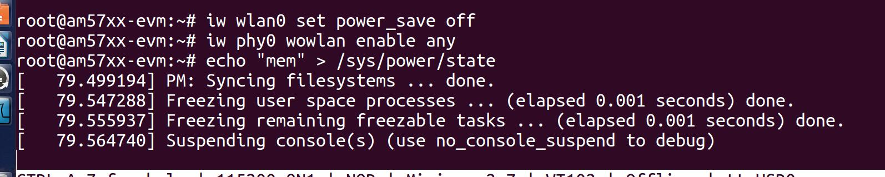
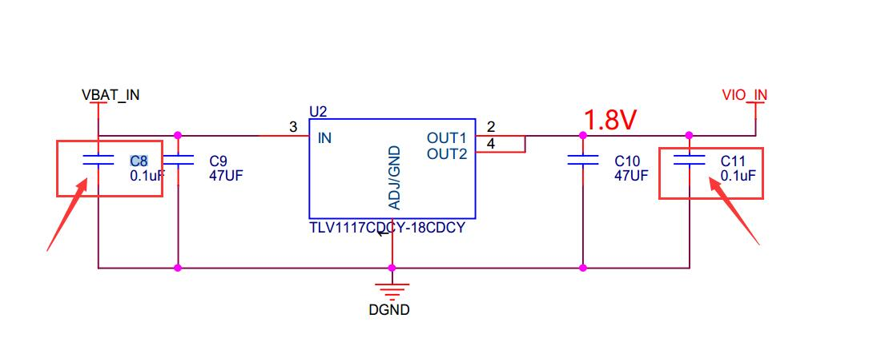

WL1837芯片
采用功率优化设计，支持工业双频(24GHz\5GHz)可提供高数据吞吐量，支持FCC、IC、ETSI/CE和TELE认证 的工业温度级天线(-40°C至85°C)，可同时配置STA和AP模式
特性
- 常规说明
- 集成了射频 (RF)、功率放大器 (PA)、时钟、RF 开关、滤波器、无源器件和电源管理单元
- 可利用 TI 模块配套资料和参考设计实现快速硬件设计
- 工作温度：–40°C 至 85°C（工业级）
- 小封装尺寸：13.3mm x 13.4mm x 2mm
- 100-Pin MOC 封装
- FCC，IC，ETSI/CE 和 TELEC 认证的芯片天线
- Wi-Fi
- 支持 IEEE 标准 802.11a、802.11b、802.11g 和 802.11n 的 WLAN 基带处理器和 RF 收发器
- 2.4GHz 20MHz 和 40MHz 单输入单输出 (SISO) 以及 2.4GHz 20MHz 2 x 2 多输入多输出 (MIMO)，针对高数据吞吐量：80Mbps (TCP)，100Mbps (UDP)
- 2.4GHz (MRC)，支持扩展范围的 5GHz 频段
- 完全校准：无需生产校准
- 4 位 SDIO 主机接口支持
- Wi-Fi 直接并发运行（多通道、多用途）
- 蓝牙和BLE(蓝牙低功耗)（仅适用于 WL1837MOD）
- 支持 蓝牙4.1标准 和 CSA2
- 主机控制器接口 (HCI) 用于通过UART进行的传输
- 支持子带 (SBC) 编码 + 高级音频传输协议 (A2DP) 的专用音频处理器
- 蓝牙 Dual-Mode 和 BLE
- LE 认证堆栈（由 TI 提供）
- 主要优势
- 减少设计开销
- 通过在两极（STA 和 AP）上同时配置 WiLink 8，可将差别化的使用案例直接连接至不同 RF 通道（Wi-Fi 网络）上的其它 Wi-Fi 器件
- 用于高性能音频和视频流参考应用的一流 Wi-Fi，覆盖范围高达单根天线的 1.4 倍
- 提供多种配置方法，可一步将室内设备连接至 Wi-Fi
- 连接空闲时最低 Wi-Fi 功耗 (< 800µA)
- WLAN 滤波器上可配置唤醒
- Wi-Fi-Bluetooth 单天线共存
应用范围
- 物联网
- 多媒体
- 家用电子产品
- 家用电器和大型家电
- 工业和家庭自动化
- 智能网关和仪表计量
- 视频会议
- 视频摄像机和安防器材
2.4G频段 信道 1、16、11 信道带宽HT20 HT40
WIFI信道并非是只是2.4GHz这一个固定值频段。具体如下：
1）IEEE 802.11b/g标准工作在2.4G频段，频率范围为2.400—2.4835GHz，共83.5M带宽
2）划分为14个子信道， 但是中国规定最多只能用13个信道
3）每个子信道宽度为22MHz
4）相邻信道的中心频点间隔5MHz
5）相邻的多个信道存在频率重叠(如1信道与2、3、4、5信道有频率重叠)
6）整个频段内只有3个（1、6、11）互不干扰信道
在平常使用的过程，我们发现有的路由器里面有个HT20和HT40的选择
802.11n有两种频宽模式：HT(High Throughput)20和HT40
HT20是出于兼容性考虑：比如，一个区域内存在802.11b/g信号，那么为了尽量减少对它们的干扰，需要设定为HT20，以减少频带的重叠
HT40是出于高性能考虑：HT40将两个相邻的20MHz信道捆绑在一起形成一个40MHz的信道，一个是主，一个是辅。主信道发送beacon报文和部分数据报文，辅信道发送其他报文。
配置文件
拷贝配置文件到
cp wpa_supplicant.conf filesystem/igh/etc
拷贝初始化配置脚本
注意：在获取ip地址之后执行
cp configure-device.sh filesystem/igh/usr/share/wl18xx/
用法：
固件
cp wl1271-nvs.bin filesystem/igh/lib/firmware/ti-connectivity/
初始化文件
mkdir -p filesystem/igh/usr/bin/wlconf/official_inis
cp WL1837MOD_INI_FCC_CE.ini WL1837MOD_INI_FCC_CE_JP.ini filesystem/igh/usr/bin/wlconf/official_inis
加载驱动：
insmod /lib/modules/4.4.12-xxx/kernel/net/wireless/cfg80211.ko
insmod /lib/modules/4.4.12-xxx/kernel/net/mac80211/mac80211.ko
insmod /lib/modules/4.4.12-xxx/kernel/drivers/net/wireless/ti/wlcore/wlcore.ko
insmod /lib/modules/4.4.12-xxx/kernel/drivers/net/wireless/ti/wlcore/wlcore_sdio.ko
insmod /lib/modules/4.4.12-xxx/kernel/drivers/net/wireless/ti/wl18xx/wl18xx.ko
测试步骤：
1、将wifi配置文件(wpa_supplicant.conf)拷贝到板子上，修改wifi名称和密码
2、链接wifi命令： wpa_supplicant -i wlan0 -B -c ./wpa_supplican.conf
3、 ssh 登录板子， 随便敲ls、cd等命令， 看下延时情况（注意要把网线拔掉， 只留下wifi）， 目前有延时， 会延时一会出现命令结果
4、此时pc机一直ping板子， 查看参数time大小， 目前测试时几百上千ms， 延时很大
5、如果没有延时的话， 就让PC一直ping板子， 过十几分钟在查看time的大小， 在板子上敲命令查看延时情况（一定要ssh登录）
root@am57xx-evm:~# wpa_supplicant -B -i wlan0 -c /etc/wpa_supplicant.conf
root@am57xx-evm:~# sleep 15
root@am57xx-evm:~# ifconfig wlan0 up
root@am57xx-evm:~# udhcpc -i wlan0
执行如下指令，可减少延时
注意：在获取ip地址之后执行
iw wlan0 set power_save off
iw phy0 wowlan enable any
echo mem > /sys/power/state //待机模式，当发生中断相应时，会重新唤醒
网速测试（使用iperf命令）
TCP
服务器端：
iperf -s
客户端：
iperf -c 192.168*** -i 5 -t 60
UDP
服务器端：
iperf -s -u
客户端：
iperf -u -c 192.168.*** -b 100M -i 5 -t 60
错误：执行 （echo mem > /sys/power/state ）死机现象
注意：在JN-open RDK4.3移植出现如下错误

将设备树中关于PCIE的节点删除即可。
注意：如果JN-open5728板卡设备没有产生，删除JN-som板卡上R440电阻
注意：当升级为RDK4.3版本时，引脚复用中EN信号必须配置为PULLUP， 如果配置为PULLDOWN，该管脚将不会被拉高，导致使能失败 (JN-open)

错误分析：

出现上述问题，可能是信号太弱， 链接天线即可。 新一批次的wifi模块小板内置天线没有链接，必须链接外置天线才可用。
当没有发现wlan0设备时：
1、查看下是否加载了驱动模块
lsmod | grep wl

2、如果没有加载模块，执行如下脚本加载模块
cd /usr/share/wl18xx
./load_wlcore.sh
3、查看wifi模块是否上电

测试记录：
12120180514400015， wifi模块使用30， 和隔鹏的17号交换
系统系统使用25s， 脚本加载使用 （加载/etc/init.d/matrix-gui-2.0）1分钟40s
连续断电上电：
当usb0识别wlan0设备没有识别时，echo mem > /sys/power/state死机
问题描述： 发现ifconfig下识别不到wlan0设备， lsmod | grep wl发现驱动没加载， 手动加载驱动 ./load_wlcore.sh。ifconfig还是发现不了设备， ls /sys/bus/mmc/device/mm 有mmc设备说明识别sdio总线
硬件更改：
1、将电感改为0欧电阻
不断上电测试 10次
第10次出现错误
2、将C9和C10改为钽电容
1.8V电源

不断上电测试 10次
第6次出现错误
第8次出现错误
3、将U2 AMS1117型号改为TLV1117CDCY-18CDCY
这两个最大的区别就是功率不一样，AMS1117的电流是335MA，TLV1117CDCY-18CDCY的电流是800MA
JN-OPEN板卡：12120180514400015， wifi模块： 17
硬件更改如上3条
不断上电测试 100次 4G和wifi设备都有存在
第8次出现死机现象（确保已经获取IP）
第89次出现执行 （echo mem > /sys/power/state ）死机现象
注意：下面几块板卡硬件只更改第三条， 其他没更改按照原理图上
JN-OPEN板卡：12120180514400007， wifi模块： 7 （sd无法启动， 可能虚焊）
硬件更改：U2换物料
不断上电测试 31次 4G和wifi设备都有存在 wifi无死机现象
第8次出现4g和wifi设备都不存在
硬件更改：C9、C10改为钽电容、将电感改为0欧电阻
不断上电测试 4 次
第4次出现4g和wifi设备都不存在
从新不断上电测试 50 次
JN-OPEN板卡：12120180514400005， wifi模块： 14
硬件更改：U2换物料
不断上电测试 7次
第3、7次出现wifi错误如下 lsmod有驱动 sdio产生mmc设备， ifconfig -a下有wlan0， ifconfig 下没有wlan0
硬件更改：C9、C10改为钽电容
不断上电测试 28次
第28次出现lsmod | grep wl发现驱动没加载， 手动加载驱动 ./load_wlcore.sh。ifconfig还是发现不了设备， ls /sys/bus/mmc/device/mm 有mmc设备说明识别sdio总线
硬件更改：将电感改为0欧电阻
不断上电测试 55次， 出现6次WRING 其他正常
JN-OPEN板卡：12120180514400006， wifi模块： 3
硬件更改：U2换物料
不断上电测试 4次
第4次出现如上图错误
硬件更改：C9、C10改为钽电容、将电感改为0欧电阻
不断上电测试 55次
出现3次执行 （echo mem > /sys/power/state ）死机现象
1次 lsmod不识别模块，sdio下没有产生mmc设备，ifconfig无wlan0
JN-OPEN板卡：12120180514400003， wifi模块： 16
硬件更改：U2换物料
不断上电测试8次
第8次出现如上错误
硬件更改：C9、C10改为钽电容、将电感改为0欧电阻
不断上电测试 50 次
第9、12、47次出现执行 （echo mem > /sys/power/state ）死机现象
JN-OPEN板卡：121201805144000010， wifi模块： 42
硬件更改：U2换物料
不断上电测试 11次
第2、11次出现 lsmod有驱动 sdio产生mmc设备， ifconfig -a没有wlan0， ifconfig 下没有wlan0
硬件更改：C9、C10改为钽电容
不断上电测试 20次 4G和wifi设备都有存在
但是经常出现如下警告， 网络获取ip比较慢。（估计是网络的问题）
硬件更改：将电感改为0欧电阻
不断上电测试 100次 无错误
也会出现如上图的WARING
JN-OPEN板卡：12120180514400004， wifi模块： 49
硬件更改：U2换物料
不断上电测试 14次
第14次出现 lsmod有驱动 sdio产生mmc设备， ifconfig -a没有wlan0， ifconfig 下没有wlan0
硬件更改：C9、C10改为钽电容、将电感改为0欧电阻
不断上电测试 50次
JN-OPEN板卡：121201805144000016， wifi模块： 59
不断上电测试 18 次
第3、4、6、18次出现wifi错误如下 lsmod有驱动 sdio产生mmc设备， ifconfig -a下有wlan0， ifconfig 下没有wlan0，出错堆栈错误
第8、9次出现wifi错误如下 lsmod无驱动，加载驱动无法产生wlan0设备， sdio产生mmc设备， ifconfig -a下无wlan0
第12次出现执行 （echo mem > /sys/power/state ）死机现象
硬件更改：wifi模块改为30
不断上电测试 50 次
第8次出现执行 （echo mem > /sys/power/state ）死机现象
总结：共10块
15号板卡 不断上电测试 100次 4G和wifi设备都有存在 。出现2次执行 （echo mem > /sys/power/state ）死机现象
7、16号 板卡sd卡无法启动，可能是虚焊
3、 5、6号板卡出现lsmod有驱动 sdio产生mmc设备，ifconfig 下没有wlan0，ifconfig -a下有wlan0 ， 启动出现堆栈错误
4、10板卡出现 lsmod有驱动 sdio产生mmc设备， ifconfig 没有wlan0， ifconfig -a 下也没有wlan0
7号板卡更换sd卡已修好， 3、4、5、6、10除了之前更换U2物料又更改：C9、C10改为钽电容、将电感改为0欧电阻，已解决